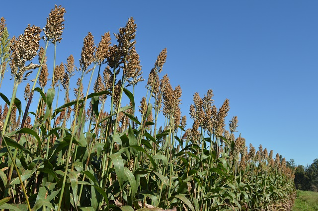

GESA
Grupo de estudos em
Sistema Agrossilvipastoril
Grupo de estudos em
Sistema Agrossilvipastoril
Neste módulo iremos apresentar as opções de culturas anuais para o
sistema agrossilvipastoril.
No cerrado, apresentando sua importância no sistema, suas
vantagens e limitações, assim como seu manejo adequado para alta produtividade.

Acompanhe o vídeo abaixo

Amortização total ou parcial do custo de implantação do
sistema;
Controle de plantas daninhas nos entre renques do
componente florestal pela lavoura;
Otimização no uso de fertilizantes;
Aumento na reciclagem de nutrientes pelo componente
florestal;
Possível fixação biológica de nitrogênio, quando
utilizadas espécies leguminosas no componente agrícola
Maior flexibilidade técnica e econômica dentro do Sistema Agrossilvipastoril
Mitigação dos efeitos antrópicos indesejados;
Componente principal para correção, adubação e
dimensionamento dos SistemaS AgroSsilvipastoriS;
Retorno econômico mais rápido;
Possibilidade de uma mesma espécie para diferentes
finalidades.
Atualmente, as principais culturas agrícolas utilizadas dentro do SASP nas regiões
Norte, Centro-oeste e Sudeste brasileiro são: arroz de terras altas, soja, milho, sorgo, milheto e
algumas alternativas promissoras tais como feijão-caupi, Crotalaria ochroleuca e nabo-forrageiro [1].
Será abordado abaixo algumas culturas e seus motivos que fazem com que estas culturas
sejam as mais utilizadas no SASP
A produção de milho destaca-se no contexto da integração lavoura pecuária, devido a inúmeras aplicações que esse grande produtor de grãos possui, na propriedade agrícola, sendo utilizado na alimentação animal na forma de grãos, de forragem verde ou conservada, na forma de rolão e silagem[2].

Uma das vantagens do milho em comparação com outras culturas, principalmente cereais,
consiste na sua qualidade na consorciação com capim. Vantagem observada pela competividade do
consorcio visto que o porte dessa planta, exerce depois de estabelecidas, grande supressão em
relação a demais espécies que crescem no local. A disponibilidade de herbicidas graminicidas
seletivos ao milho, possibilita obter resultados excelentes com a consorciação milho com planta
forrageira [2].
Vale destacar da cultura é que ela apresenta elevado potencial produtivo, com bom valor
de mercado na maioria dos anos agrícolas, com produtividade de grãos variando de 2.000 a mais de
m10.000 kg/ha, tem uma excelente resposta a adubação, especialmente a nitrogenada, tem
capacidade de produz elevada quantidade de resíduos culturais, existe uma gama enorme de matérias
(híbridos simples, duplos, triplos e variedades) no mercado que podem ser selecionados para melhor
adequar ao clima e solo da área de implantação [1].
O controle de plantas daninhas, doenças e pragas é idêntico ao realizado no cultivo
tradicional, tendo atenção as pragas e , que são um dos grandes problemas de sistemas integrados [1].
Apresenta algumas exigências sendo os materiais de alta tecnologia exigentes quanto às
condições químicas do solo, notadamente em relação à disponibilidade de nitrogênio e potássio,
seguindo-se cálcio, magnésio e fósforo, apresenta exigência elevada quanto à radiação solar, podendo
tornar-se inviável para regiões sob alta incidência de nuvens na fase fisiológica do enchimento de
grãos, e é precedente desaconselhável para outras gramíneas agrícolas no sistema de rotação ou
sucessão de culturas, notadamente para o arroz de terras altas [1].
Na Figura abaixo pode-se observar a cultura do milho em sistema integrado de produção
com o Pequi (Caryocar brasiliense) sendo a espécie florestal do sistema no terceiro
ano após a implantação.

Constitui uma opção viável, para atender a demanda dos produtores, devido as sua composição química ser semelhante ao milho, possibilitando uma fermentação adequada, consequentemente esse alimento tem a disponibilidade de conservação na forma de silagem, outro fator interessante é a sua elevada taxa de proteína bruta em algumas variedades e maior tolerância a seca [3].
 O sorgo consiste num tipo de planta típica
de clima quente, com características , que além de apresentar uma relativa baixa
exigência em termos de fertilidade do solo, possui alta tolerância a estresses abióticos como:
deficiência hídrica, solos com alto teor de salinidade e encharcamento. Em relação à característica
de encharcamento, o sorgo se torna tolerante quando é plantado após a lavoura de arroz no SASP[4].
Outras vantagens apresentadas é o grande potencial produtivo de grãos, com
produtividades variando de 1.000 a mais de 7.000 Kg/ha, elevado potencial produtivo de
forragem, tanto para pastejo quanto para corte, representa uma boa opção de safrinha com materiais
apropriados para qualquer fase da janela de semeadura, apresenta grande facilidade no consórcio com
forrageiras, facilitando e, no caso do sorgo granífero, custeando parcialmente a inserção da
forrageira dentro do Sistema Agrossilvipastoril[1].
O sorgo possui algumas características culturais que precisam ser muito bem manejadas
para viabilizá-lo dentro do SASP, pois apresenta baixa tolerância ao Al3+, quando
comparado ao milheto, apresenta maiores exigências em relação à maioria dos atributos químicos e
físicos do solo não sendo, desta forma, recomendado para qualquer condição edafoclimática, apresenta
maior competição com forrageiras dentro dos consórcios e é um precedente desaconselhável para
algumas culturas, notadamente o arroz de terras altas. [1].

A soja é a cultura agrícola mais utilizada no SASP , pois apresenta uma série de característica relevantes para o sistema: é uma leguminosa e, portanto, fixadora de nitrogênio, prestando serviço ambiental ao reduzir a necessidade de entrada de nitrogênio mineral nos sistemas agrossilvipastoris; é a lavoura mais cultivada e de maior importância agro econômica no Brasil; é classificada como “commodity” agrícola, tendo seu preço regulado pelo mercado internacional que, por sua vez, está favorável nos últimos anos e assim deverá permanecer frente à demanda crescente de alimentos no mundo, possui elevado potencial produtivo, atingindo patamares de 6.000 kg/ha; pode ser utilizada na renovação e/ou reforma de pastagens degradadas; possui sistema radicular pivotante e razoavelmente agressivo; é uma ótima precedente para a maioria das demais culturas agrícolas; é apropriada para ser cultivada no SPD sobre outras forrageiras[1].

Apresenta desvantagens como:
O Manejo de plantas daninhas consiste no maior desafio fitotécnico da soja dentro do SASP,
notadamente quando integrado com o componente florestal. Neste caso, a estratégia de manejo vai
depender, principalmente, da idade e das espécies florestais, dos sistemas de cultivo e da
quantidade de palhada no solo. Na implantação do sistema iLPF com componente florestal e lavoura de
soja, uma das estratégias mais utilizadas é implantar o componente florestal na área só após a
aplicação dos herbicidas na soja. O manejo de doenças e pragas é realizado de forma idêntica ao
convencional, dando destaque para pragas e fitopatógenos polífagos do sistema como a H.
armigera e o Pratylenchus brachiurus [1].
Recomenda-se que a pulverização seja feita em dias sem vento e com temperaturas mais amenas, em baixa velocidade e utilizando bicos anti-deriva nas pontas da barra de pulverização. Outra medida eficiente é deixar uma faixa de 1m a 1,5 m entre a lavoura e a linha de árvores. [6].
O milheto apresenta vantagens como: crescimento rápido e com rebrota, permitindo a entrada de animais a partir dos 35 dias após sua implantação quando as são favoráveis; apresenta uma produtividade de grãos variando entre 500 a 1500 Kg ha-1 ainda, que, dificilmente será esta a finalidade principal dentro dos sistemas agroflorestais; é muito menos exigente em relações às condições edafoclimáticas quando comparado ao milho e ao sorgo sendo, por isso, recomendado para fechamento da semeadura na safrinha; é um excelente precedente para a maioria das culturas; apresenta materiais com fator de reprodução para nematoides extremamente baixos, notadamente para o Pratylenchus brachyurus, sendo uma excelente alternativa de safrinha para áreas com solos infestados por esse fitopatógeno; apresenta facilidade de ser consorciado com forrageiras podendo, inclusive, ser semeado com as mesmas em uma única operação; baixo custo de implantação quando utilizadas sementes produzidas na própria fazenda; apresenta grande facilidade na dessecação e boa ciclagem de nutrientes[1].
O milheto, por outro lado, possui algumas características culturais que precisam ser muito bem manejadas para viabilizá-lo dentro dos sistemas agroflorestais: apresenta baixa produção de palhada (que pode ser ampliada, se consorciado com forrageiras, tal como a B. ruziziensis); apresenta degradação muito rápida da palhada [1]
Apontado como uma das alternativas promissoras de leguminosa forrageira para solos de textura média e argilosa, o feijão-caupi, cultivado na safrinha dentro do SASP apresenta características relevantes para o sistema, tais como:[1]
Por outro lado, o feijão-caupi possui algumas características culturais que demandam ser muito bem manejadas para viabilizá-lo dentro dos sistemas agroflorestais, são elas:[1].
A Crotalária ochroleuca também é apontada como uma das alternativas promissoras de leguminosa forrageira para solos de textura média e argilosa cultivada na safrinha dentro do SASP por apresentar as seguintes características relevantes para o sistema:

Ao responder os exercícios, você deve acertar no mínimo 3 questões para avançar para o próximo módulo, caso contrário, a página será recarregada e você deverá tentar responder os exercícios novamente.
Questão 1: São benefícios da lavoura para o Sistema Agrossilvipastoril exceto:
PARABÉNS!
Resposta Correta. O sombreamento realizado pela cultura anual e pelas árvores
dificulta o crescimento de plantas daninhas.
RESPOSTA INCORRETA!
Questão 2: Dentre as culturas listadas abaixo, qual não é comumente utilizada em sistemas Agrossilvipastoris nas regiões Norte, Centro-oeste e Sudeste brasileiro?
PARABÉNS!
Resposta Correta. Atualmente, as principais culturas agrícolas utilizadas dentro do SASP nas regiões Norte, Centro-oeste e Sudeste brasileiro são: arroz de terras altas, soja,
milho, sorgo, milheto e algumas alternativas promissoras tais como feijão-caupi, Crotalaria
e nabo-forrageiro.
RESPOSTA INCORRETA!
Questão 3: Qual dessas culturas pode ser utilizada na alimentação animal na forma de grãos, de forragem verde ou conservada, na forma de rolão e silagem?
PARABÉNS!!
Resposta Correta. A produção de milho destaca-se no contexto da integração lavoura
pecuária, devido a inúmeras aplicações que os grãos possuem na propriedade agrícola, sendo
utilizado na alimentação animal na forma de grãos, de forragem verde ou conservada, na forma
de rolão e silagem.
RESPOSTA INCORRETA!
Questão 4: Qual dessas culturas é uma excelente alternativa de safrinha para áreas com solos infestados por nematóides Pratylenchus brachyurus?
PARABÉNS!
Resposta Correta. A Crotalária ochroleuca apresenta fator de
reprodução para nematoides extremamente baixo, notadamente para o Pratylenchus
brachyurus, sendo uma excelente alternativa de safrinha para áreas com solos
infestados por esse fitopatógeno.
RESPOSTA INCORRETA!
[1] WRUCK, F, J; BEHLING, M; LANGE, A. Produção da lavoura em sistemas de ILPF. In: BUNGENSTAB, D.
J.; ALMEIDA, R. G. de; LAURA, V. A.; BALBINO, L. C.; FERREIRA, A. D. (Ed.). ILPF: inovação com
integração de lavoura, pecuária e floresta. Brasília, DF: Embrapa, 2019. Cap. 21, p. 319-345.
[2] ALVARENGA, R. C.; NETO, M.M.G; RAMALHO, J. H.; GARCIA, J.C.; VIANA, M.C.; CASTRO, A.A.D.N.
Sistema e Integração Lavoura- Pecuária: O Modelo implantado na Embrapa Milho e Sorgo. Sete Lagoas:
Embrapa Milho e Sorgo, 2006. 9p. (Circular Técnica, 93).
[3] ALVARENGA, R.C.; RODRIGUES, J.A.S.; SANTOS, F.C.; GONTIJO NETO, M.M.; VIANA, M.C.M. A cultura do
sorgo em sistemas integrados lavoura-pecuária ou lavourapecuária floresta. Sete Lagoas: Embrapa
Milho e Sorgo, 2011. 14p. (Circular Técnica, 172).
[4] SOUZA, J.W.T; SOUZA, B.M.L; SILVA, C.M. SISTEMA DE INTEGRAÇÃO LAVOURA-PECUÁRIA-FLORESTA (ILPF).
Ciência Animal, v.30, n.3, p.71-84, 2020. 71